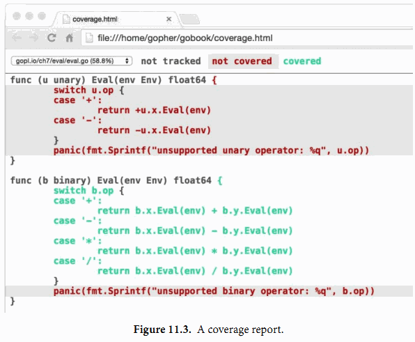

11.3. 測試覆蓋率
就其性質而言，測試不可能是完整的。計算機科學家Edsger Dijkstra曾說過：“測試能證明缺陷存在，而無法證明沒有缺陷。”再多的測試也不能證明一個程序沒有BUG。在最好的情況下，測試可以增強我們的信心：代碼在很多重要場景下是可以正常工作的。
對待測程序執行的測試的程度稱為測試的覆蓋率。測試覆蓋率並不能量化——即使最簡單的程序的動態也是難以精確測量的——但是有啟發式方法來幫助我們編寫有效的測試代碼。
這些啟發式方法中，語句的覆蓋率是最簡單和最廣泛使用的。語句的覆蓋率是指在測試中至少被運行一次的代碼佔總代碼數的比例。在本節中，我們使用go test命令中集成的測試覆蓋率工具，來度量下面代碼的測試覆蓋率，幫助我們識別測試和我們期望間的差距。
下面的代碼是一個表格驅動的測試，用於測試第七章的表達式求值程序：
gopl.io/ch7/eval
func TestCoverage(t *testing.T) {
var tests = []struct {
input string
env Env
want string // expected error from Parse/Check or result from Eval
}{
{"x % 2", nil, "unexpected '%'"},
{"!true", nil, "unexpected '!'"},
{"log(10)", nil, `unknown function "log"`},
{"sqrt(1, 2)", nil, "call to sqrt has 2 args, want 1"},
{"sqrt(A / pi)", Env{"A": 87616, "pi": math.Pi}, "167"},
{"pow(x, 3) + pow(y, 3)", Env{"x": 9, "y": 10}, "1729"},
{"5 / 9 * (F - 32)", Env{"F": -40}, "-40"},
}
for _, test := range tests {
expr, err := Parse(test.input)
if err == nil {
err = expr.Check(map[Var]bool{})
}
if err != nil {
if err.Error() != test.want {
t.Errorf("%s: got %q, want %q", test.input, err, test.want)
}
continue
}
got := fmt.Sprintf("%.6g", expr.Eval(test.env))
if got != test.want {
t.Errorf("%s: %v => %s, want %s",
test.input, test.env, got, test.want)
}
}
}
首先，我們要確保所有的測試都正常通過：
$ go test -v -run=Coverage gopl.io/ch7/eval
=== RUN TestCoverage
--- PASS: TestCoverage (0.00s)
PASS
ok gopl.io/ch7/eval 0.011s
下面這個命令可以顯示測試覆蓋率工具的使用用法：
$ go tool cover
Usage of 'go tool cover':
Given a coverage profile produced by 'go test':
go test -coverprofile=c.out
Open a web browser displaying annotated source code:
go tool cover -html=c.out
...
go tool命令運行Go工具鏈的底層可執行程序。這些底層可執行程序放在$GOROOT/pkg/tool/${GOOS}_${GOARCH}目錄。因為有go build命令的原因，我們很少直接調用這些底層工具。
現在我們可以用-coverprofile標誌參數重新運行測試：
$ go test -run=Coverage -coverprofile=c.out gopl.io/ch7/eval
ok gopl.io/ch7/eval 0.032s coverage: 68.5% of statements
這個標誌參數通過在測試代碼中插入生成鉤子來統計覆蓋率數據。也就是說，在運行每個測試前，它將待測代碼拷貝一份並做修改，在每個詞法塊都會設置一個布爾標誌變量。當被修改後的被測試代碼運行退出時，將統計日誌數據寫入c.out文件，並打印一部分執行的語句的一個總結。（如果你需要的是摘要，使用go test -cover。）
如果使用了-covermode=count標誌參數，那麼將在每個代碼塊插入一個計數器而不是布爾標誌量。在統計結果中記錄了每個塊的執行次數，這可以用於衡量哪些是被頻繁執行的熱點代碼。
為了收集數據，我們運行了測試覆蓋率工具，打印了測試日誌，生成一個HTML報告，然後在瀏覽器中打開（圖11.3）。
$ go tool cover -html=c.out

綠色的代碼塊被測試覆蓋到了，紅色的則表示沒有被覆蓋到。為了清晰起見，我們將背景紅色文本的背景設置成了陰影效果。我們可以馬上發現unary操作的Eval方法並沒有被執行到。如果我們針對這部分未被覆蓋的代碼添加下面的測試用例，然後重新運行上面的命令，那麼我們將會看到那個紅色部分的代碼也變成綠色了：
{"-x * -x", eval.Env{"x": 2}, "4"}
不過兩個panic語句依然是紅色的。這是沒有問題的，因為這兩個語句並不會被執行到。
實現100%的測試覆蓋率聽起來很美，但是在具體實踐中通常是不可行的，也不是值得推薦的做法。因為那隻能說明代碼被執行過而已，並不意味著代碼就是沒有BUG的；因為對於邏輯複雜的語句需要針對不同的輸入執行多次。有一些語句，例如上面的panic語句則永遠都不會被執行到。另外，還有一些隱晦的錯誤在現實中很少遇到也很難編寫對應的測試代碼。測試從本質上來說是一個比較務實的工作，編寫測試代碼和編寫應用代碼的成本對比是需要考慮的。測試覆蓋率工具可以幫助我們快速識別測試薄弱的地方，但是設計好的測試用例和編寫應用代碼一樣需要嚴密的思考。